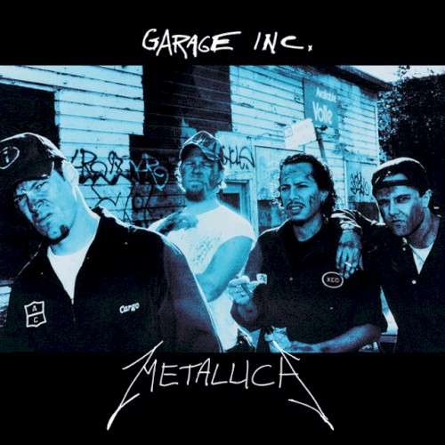
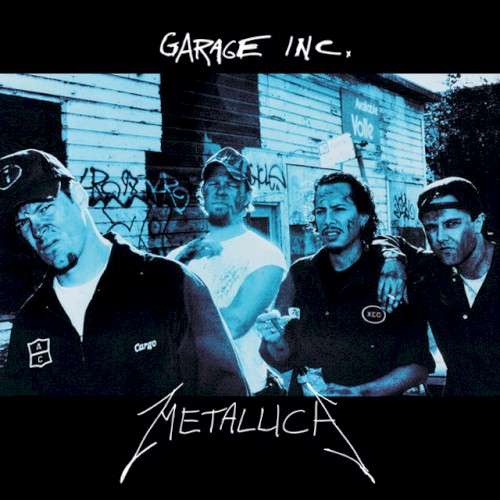
My earliest memories of heavy metal were from car rides with my mom. I don't consider this time period "the beginning" of my interest in metal; rather, I see it as just the context in which my interest was allowed to take root. But it shows that even early on, I had a particular fondness of metal. I've always been drawn to it. My mom and younger brother all listened to music on my parents' iPod (which is ancient, by the way--one of the older models). The music varied a fair amount, but it was mostly popular music (rock, hip-hop/rap, pop, etc.) from the 70's to the 2000's (but mostly the 90's and 2000's). And of course, what Gen Xer's library would be complete without Metallica? Specifically, it was the "Garage Inc." compilation that found its way into our rotation. As soon as I heard Metallica's cover of the Queen track "Stone Cold Crazy," I was hooked. (I also I had no idea it was a cover until much, much later.)

Sometimes, as a treat, my mom would let the next track, "So What?" play next, and I got to hear the opening "SO FUCKING WHAT!" in all of its obscene glory. (Note: I was no older than 10 or 11.) At that age I didn't quite have the vocabulary to say I liked distorted guitars and dudes with long, greasy hair shouting about things, so I dubbed this genre "angry music." If I wanted to listen to Metallica, I would ask my mom to put on some "angry music." Interestingly, I don't recall hearing any other Metallica songs, or any other thrash bands for that matter, and at one point my mom opted instead to introduce me to Fiona Apple. Her music was certainly angry, but not quite what I was after. I still liked "Fast As You Can" though.

Fast forward to around 2019. I've only just started to actually listen to music on my own and develop my own taste. At the time, my primary vehicle of music discovery was....."meme song" compilations on YouTube. These videos have long since been DMCA'd, but they introduced me to such classics as "Stayin' Alive" by The Bee Gees, or "Rasputin" by Boney M. I also found a lot of music from movies/TV shows (especially South Park, actually) and video games, and my rotation inherited some artists from my parents' iPod as well (namely, Gorillaz). At this point I spent quite a lot of time online, in groups brought together by particular fandoms (for me, this started in about 2016). In one of these groups, I befriended a guy named Brandon, and he put me onto Korn's "The Path of Totality."
And so my nu metal phase began. I listened to a fair amount of EDM at the time, so the dubstep elements appealed to me, and, being Korn and all, the album spoke to my overblown teen angst. In due time, I explored other records from Korn's discography, as well as bands like Marilyn Manson, Limp Bizkit, System of a Down, and a handful of songs from Disturbed and Slipknot. I also checked out "Kill 'Em All," "Ride the Lightning," and "Master of Puppets" around this time. Sometime in 2020, I watched South Park Season 21 Episode 6, "Sons a Witches," and one scene in particular featured the classic Iron Maiden track, "The Number of the Beast." I loved it. Shortly after, I checked out some other Iron Maiden songs on my own, and "Fear of the Dark" also became a favorite track of mine. There are a few reasons I consider this era as merely preliminary to my interest in metal: none of these nu metal bands (nor Metallica or Iron Maiden) are the bands that spurred me to sincerely explore metal as a whole, and the rest of my interest in metal has been fairly continuous, while these two eras are more separated, and their consequences on my music taste as a whole aren't as obvious.
 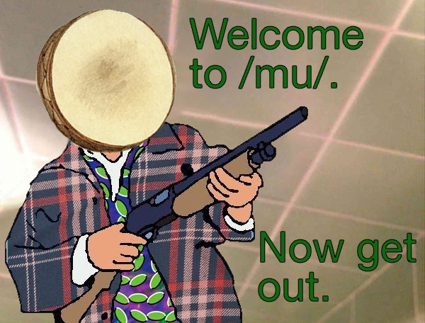
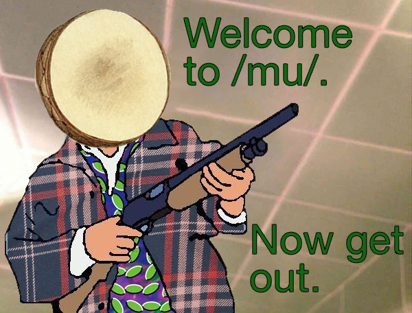
For my senior year of high school, I transferred to another high school in a nearby town (and across the state border!) looking for a fresh start and better educational opportunities. For the most part, I got those things, but I got another very important thing from my tenure at TDHS. It was there that I let metal into my heart. Sorry, Jesus, you'll have to wait in line. It was fall 2022 now, and my music taste had certainly come a long way in the last 5 years. At this time I frequented 4chan's music board, /mu/, and I found a lot of great music via the Essential Charts on 4chan's music wiki and RateYourMusic.com. The former especially would be highly instrumental in helping me get into metal. As soon as I found something I liked, and that I wanted more of, I could simply check those charts and find more right away. That made it easy for me to find a handful of bands I liked rather than just the one. And I could do this quickly. My only real limitation was the rate at which I actually do listen to new music; I tend to do it rather slowly, especially now that the dust has settled and the excitement of an entire genre being new to me has subsided.
So, how did this actually start? I struggle a lot to make friends, so around October I asked my mom for some advice, and she suggested complimenting people's shirts (assuming the shirts are of something that I also like, obviously). Not long after, I got the chance to do just that. In my Spanish class I was seated at a table with a guy named Oliver, and eventually I saw him wearing a System of a Down shirt. If I recall, I actually didn't say anything about it the first time. Either I didn't get the chance or I was too shy--likely some combination of both. So I waited a while for him to show up wearing the shirt again. It took a while, but eventually he did, and I told him it was a cool shirt. We may have talked briefly and then parted ways, but I believe we actually became friends when he handed me a note after class at a later date. It had some contact information that I used to hit him up later, and on October 28th, I made my first friend at TDHS. The exact date isn't important, but I'm including it for posterity because I went through a lot of trouble to find the precise time when we became friends.

My obsession with heavy metal can be traced back to exactly one song. That song was from one of Oliver's playlists. We had exchanged Spotify accounts and did some fun stuff like make a collaborative playlist, and I ended up looking at his other public playlists. One song in particular caught my attention, because it had an album cover I recognized from numerous /mu/ charts (and probably some posts, too). That was none other than Acid Bath's "When The Kite String Pops." The track that caught my attention was "Scream of the Butterfly;" I decided to give it a shot, and I fell in love. But the rest of the album was far more abrasive, and I just couldn't get over all the awful screaming (I think it's fucking awesome now, but at the time I wasn't into it). And so I was obsessed with "Scream of the Butterfly," and to my frustration I just couldn't get into the other songs, although I kept trying. I wanted to love this album. I kept banging my head against the wall, but at the same time I had started scouring the /mu/ wiki, looking for similar albums and getting some exposure to the various subgenres of metal.
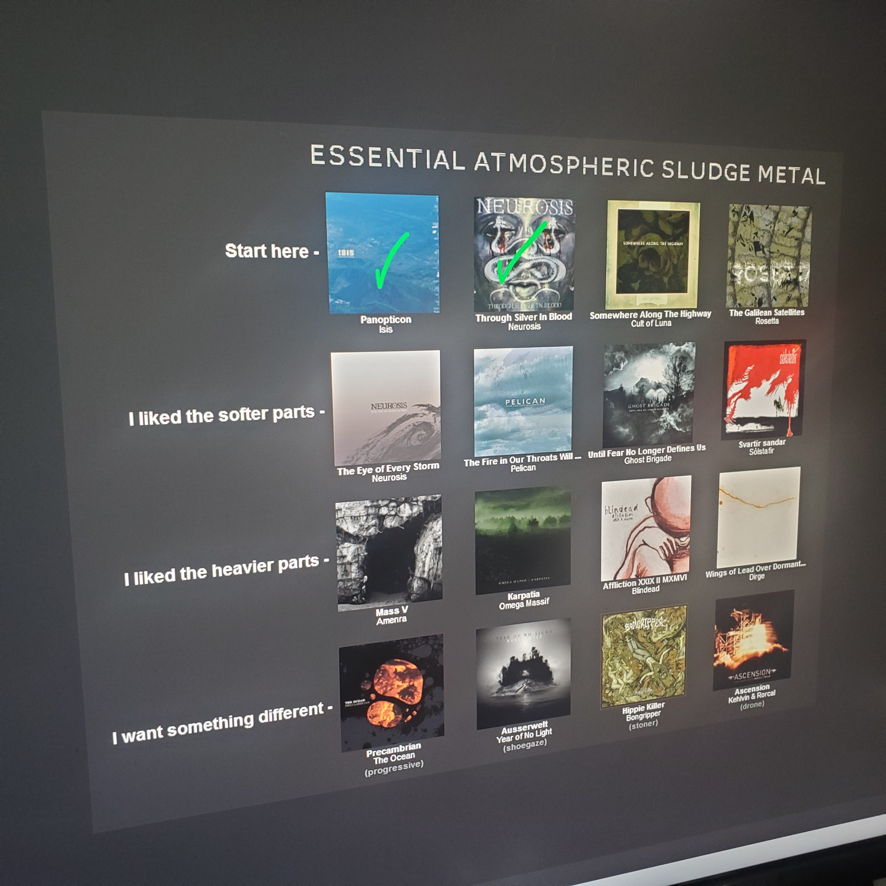I ended up looking at the "sludge metal" and "doom metal" charts, the latter because it had a "sludge" section on it; this probably helped by encouraging me to try other styles of doom metal as well. I spent a fair amount of time on the "atmospheric sludge metal" chart. By that time I had developed quite a fondness for music that was avant-garde or atmospheric, so some of those atmospheric sludge/doom metal bands really hit the spot. The first was ISIS, particularly their album "Panopticon." That album blew my fucking mind. I also tried "Through Silver in Blood" by Neurosis, but I didn't like it so much. I liked a couple songs though; I remember absolutely loving the drumming at the beginning of the title track. I still wasn't into harsh vocals, and the reason Panopticon worked so well is because they were drowned out in all of the other noise and there were a lot of instrumental sections. I'm confident I would love that Neurosis album if I gave it a shot now, but I haven't gotten around to it yet. Two other heavyweights in my heavy new rotation were Ahab's monumental "The Call of the Wretched Seas"--a "funeral doom metal" album that I love to this day--and "The Ties that Blind" from Mouth of the Architect--another atmospheric sludge metal album that definitely holds up as well. I was starting to get used to the vocals, or at least be able to overlook them, and I got really into some of those Acid Bath tracks, namely "The God Machine"--which made it to #9 of my top 10 most listened to tracks in 2023 (I discovered Acid Bath and the rest of these bands throughout December of 2022), "Cassie Eats Cockroaches," and "Jezebel."

While browsing RateYourMusic.com, looking at different metal subgenres, I stumbled upon Agalloch's "The Mantle" and was compelled to try it by some of the reviews. It's still in my top 10 albums. "In The Shadow of Our Pale Companion" was and is a very special track for me, and this was essentially my introduction to black metal--quite a mellowed out type of black metal, but black metal nonetheless. I also checked out Electric Wizard's "Funeralopolis," "Written in Waters" from Ved Buens Ende, "Arcturian" from Arcturus (these two were from an avant-garde black metal chart), Pelican, Woods of Ypres, "Songs of Death" by Put (Russian band), Thergothon, Esoteric, Primordial, and Nails. I still have a review up on RateYourMusic.com for Songs of Death where I complain about the vocals. I should revisit that one too. Finally, I discovered Burzum. Like many others, my first album was "Filosofem." I was also going through the /mu/core chart at this time, so bands like Duster, Radiohead, Don Caballero, GSY!BE, and Queens of the Stone Age were in my rotation alongside Nails and Electric Wizard. My interest in metal was still in its early stages, so in early 2023 my library consisted mostly of other things with some metal sprinkled in there. In the spring I discovered bands like Mgla, Arnaut Pavle, Immortal, and Mayhem. Nails also piqued my interest in grindcore, and with the help of RateYourMusic I dipped my toes into this genre and discovered bands like Pig Destroyer and my beloved Terrorizer. I was also introduced to Nailbomb, Insect Warfare, and Napalm Death, although I never got into these bands as much as Pig Destroyer or Terrorizer. While I can't say for sure, I think it was at this point that I no longer had a problem with harsh vocals.
It was in June of 2023 that metal finally usurped the dominant position in my music rotation. I became really interested in black metal, and discovered bands like Darkthrone, Ulver, Paysage D'Hiver, Helleruin, Emperor, Celtic Frost, Venom, Dissection, Mysticum, Bathory, Blasphemy (I actually found out about these guys just by seeing Mayhem's Hellhammer wearing one of their shirts in an old photo), etc. In the midst of all the black metal I was listening to, I also checked out Tomb Mold (only their debut though, I didn't try the rest for some reason), Sulfuric Cautery, Katatonia, Slayer, along with some other bands. I discovered both Mysticum and Katatonia via Darkness Shall Rise Productions. I was really into their cassette box sets at the time. I discovered Tomb Mold and Sulfuric Cautery (along with Arnat Pavle and Helleruin from earlier) through Bandcamp. By now it was the summer, and I was fresh out of high school and just barely an adult. 2022-2023 was a great school year (my favorite out of gradeschool for sure), but the best may be yet to come.
College was very different from high school. I had lived in rural Washington for the overwhelming majority of my life, and now I was in nested in the heart of Seattle. For the first time in my life, I lived somewhere with a local music scene. I was fortunate enough to make friends very quickly, thanks to the Bathory t-shirt I was wearing during the Fall Welcome Kickoff at my school. I met a guy named Lucas and after the ceremony I walked with him and his roommate and we hit it off. Thanks to Lucas' superior ability to make friends, I sort of became part of a group full of other people (many of whom were into punk and/or metal). It was around this time that I had decided I should check out death metal, having given black metal all of my attention for the last several months. I tried a couple Death albums ("Symbolic" and "Sound of Perseverance"), "Seven Churches," and Morbid Angel's debut "Altars of Madness." I actually didn't care for Morbid Angel at the time; I had a problem with all of the tempo changes and how fast it was. It took a long time (long after my tenure at SU), but I came around. Morbid Angel is among my favorite bands now. It was Death's "Symbolic" that I got really into. And so the seeds had been sown for what would later take root as the dominant genre of interest for me.
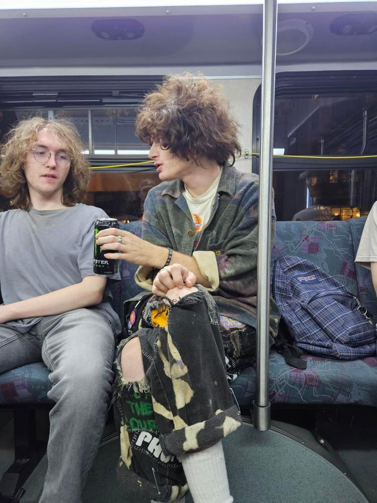Because Lucas (and one of his friends) were punks, I felt obligated to check out some punk music, namely entry-level bands like Crass, Subhumans, and (early) Butthole Surfers. But I also checked out some stuff on RateYourMusic, and stumbled upon and excellent crust punk album from Sacrilege: "Behind the Realms of Madness." Another one of my all-time favorites. I discovered plenty of other bands on the internet around this time as well: Damaar, Nargaroth, Xasthur, Leviathan, Master's Hammer, Dehumanizing Itatrain Worship, and Magrudergrind. I got around to trying Cannibal Corpse, too. I had also started to involve myself in the Seattle music scene while I was there. It pains me to admit it, but I was paying Zion's Gate a visit far more often than a college student ever should (although I had an allowance at the time and was doing pretty well financially). I remember one instance where I bought some records and the guy at the counter said "see you next week" as I left. It was a Saturday. At one point I asked one of the guys working there (I think he might be the owner, but I'm not sure) for some black metal recommendations and I got a great list from him. I heeded his recommendations and found some awesome bands like Lamp of Murmuur and Godkiller. I have EPs from both that I picked up on site. He also recommended Blackbraid, but I have to admit I never got around to checking them out. Someone else from Lucas' group, a guy named Michael, had me try "Left Hand Path" by Entombed, and I got hooked on it. Another major step in the direction of death metal.
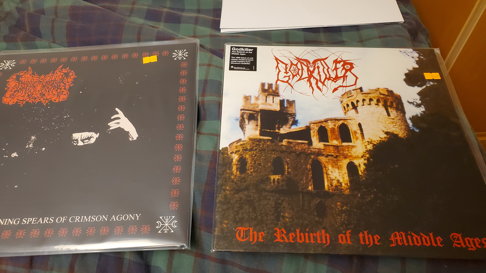 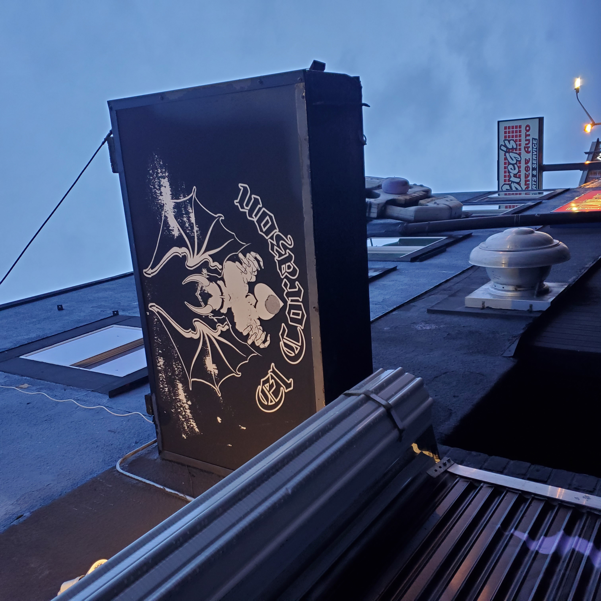I also started attending shows with Lucas & co., namely at a venue called El Corazon / The Funhouse. We mostly went to see more punk-adjacent bands, but I had fun anyways. We saw ACxDC (Dec 5th) and I quite liked them. They're probably the only band I've revisited in my own time. I also saw that Archgoat would be playing there in May 2024, so I made plans to go with Lucas. I had gotten particularly into Satanic Warmaster at the time (Zion's Gate having Satanic Warmaster records in stock was really helpful, because a lot of their material is unavailable on Discogs) and so the thought of any band even remotely affiliated with Satanic Warmaster coming to play in Seattle was awesome to me. (Archgoat and Satanic Warmaster both being black metal bands from Finland; they also did a split together.) Primordial would also be at that show. I looked forward to seeing them both. Unfortunately Subhumans were also playing there, but I opted not to go with Lucas & co. because I was falling behind in my schoolwork. I didn't check Subhumans out until a bit later; if I had known them back then, I would've gone. But this was a particularly important time. Because of these experiences, I started to keep up on what bands were coming through the area, and I would become a regular attendee for metal shows at El Corazon. To this day I still make the trip to Seattle whenever I can--rain or shine, 80 miles or 200--to go see whatever metal bands are playing. I've had a lot of great experiences and discovered a lot of great bands by doing this. Along with my many visits to record stores and shows, I also joined the student radio station at my school, KXSU, as a blog writer. I imagine the dozens of RYM reviews I had written by that point (which I submitted in my application) were helpful! My first KXSU article was on Sleep's Dopesmoker. I had a lot of fun writing it.
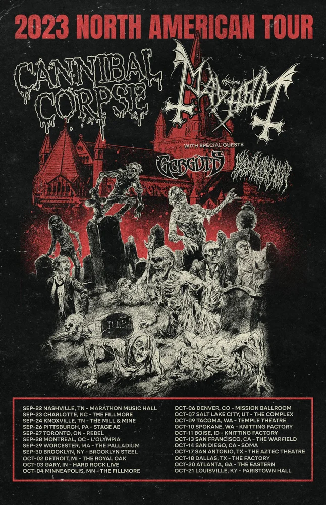In mid October, I also attended my very first metal show: Cannibal Corpse and Mayhem's 2023 North American Tour (Oct 10th, 2023). I had bought tickets many months prior, and so when the time came I took a plane to Spokane and checked into a hotel, then saw them later that night along with Gorguts and Blood Incantation. For the first time, I was in a room surrounded by tons of people who were into metal like I was. I didn't interact with the other concertgoers very much, but I got a terrible photo with Luc Lemay (I had no idea at the time that Gorguts was kind of a big deal--same for Blood Incantation; I would be a lot more excited to meet Luc Lemay for a second time!) For Halloween, I also bought spiked gauntlets, a bullet belt, and put on corpsepaint and walked around campus like that. I cringe looking back on it, but I wasn't aware that wearing corpsepaint like that was "uncool," and I still think it *looked* cool, I just wasn't a performer. The gauntlets I bought have long nails for spikes, so they're much to heavy to wear for any occasion, really. I'd like to get some more practical gauntlets, and I wear my bullet belt to shows every once in a blue moon.
Unfortunately, my tenure at SU didn't last very long. Aside from the fun stuff, I was failing to grapple with the demands of college. I had made the grave mistake of trying to major in computer science *and* do honors. It was my first quarter of college and I was already taking on 18 credits (the maximum)--and for a STEM major and honors classes no less. By the end of the first quarter, my mental health took a massive shit, and I stopped attending class and attended none of the finals. My honors professors said I didn't need to attend the finals for their classes, since I already failed them by not completing some of the major assignments, and my Calculus class kicked my ass for the whole quarter, beginning to end, so I knew I'd fail that final. In retrospect, I might have barely scraped by for the computer science final, but at the time I didn't bother. And so, on December 9th, my mom drove up to Seattle to come take me home (but not without one final splurge at Zion's Gate). I don't remember everything I bought that day, but I know one of them was Candlemass's legendary "Epicus Doomicus Metallicus." I had seen it around and decided it was time I familiarized myself with it. It became another one of my favorites. As soon as I dropped the needle on it, that album put a spell on me (I guess you could say I was Bewitched!)

It's worth noting that during the first several months of 2024, I was extremely depressed and aimless. I also tried various anti-depressants, but none of them worked for me. It isn't something I want to dwell on, but it would feel disingenuous to omit. For the most part, my taste remained the same for a little while, but in mid-January I tried Deicide's debut album. I didn't really like it at first. I ran into the same issue I did with Morbid Angel before: I didn't feel like any of the riffs that I liked went on long enough, all of the tempo changes were pretty jarring, and a lot of the riffs blended together for me. But I kept at it, much as I did with Acid Bath long before. I also explicitly remember seeing some Deicide merch that said "If you don't like Deicide, you don't like death metal." It's funny, but I think that contributed to my motivation to really try to appreciate their sound. I also love the album cover, and for me personally, if an album cover is cool enough, I'm willing to give it as many tries as it takes. A couple weeks later, I found Demolition Hammer's "Epidemic of Violence" in the "Brutal Thrash" category on a chart from the /mu/ wiki. From beginning to end, that album absolutely rocked my shit, and it remains another one of my favorites to this day.
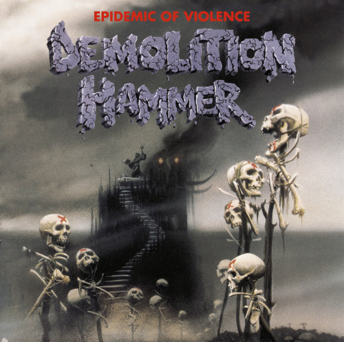Finally, in early February, the Deicide debut clicked for me. "Mephistopheles" and "Oblivious to Evil" are the tracks I would credit for hooking me onto the rest of the album. I also checked out the second Entombed album, "Clandestine," a few tracks from Grave, and Gorement's "The Ending Quest" (I saw it in the Swedish Death Metal /mu/ chart and thought the album art looked sick). I also had my first run-in with Autopsy, via "Service For a Vacant Coffin." I also re-visited (and got really into) some albums I tried earlier and wasn't into: Emperor's "In The Nightside Eclipse" and G.I.S.M.'s "Military Affairs Neurotic." Both of these, especially the latter, are now favorites of mine. Around this time, I also discovered perproductions' wonderful and robust "A Rough Guide to Metal Subgenres" series on YouTube. I cannot stress enough how instrumental (and helpful) this was for solidifying my understanding of the differences between the different subgenres. I think I had a decent idea before, but this made them that much clearer, and also taught me a little bit about the genres I hadn't touched yet. I've been very clear on the subgenres ever since. I cannot recommend this enough.
At this point, things slowed down a bit. I didn't exactly snowball into death metal, finding band after band in rapid fire, but I don't think I ever really lost the momentum that was nudging me in that direction. In late February, I tried Obituary's "Cause of Death." Around this time, I was also introduced to Dismember via "Let the Napalm Rain" on a post from PullThePlug's Instagram account (the patch vendor). I also started to dip my toes into the discography of Bolt Thrower and Napalm Death's early 90's death metal material. In early March I gave the first two Autopsy albums a fair shot, and I also tried Bloodbath, Suffocation, and Benediction. I listened to Celtic Frost's final album, "Monotheist," as well. This one was the soundtrack to that part of my life. It also remains a favorite of mine. Although I might like To Mega Therion a little bit better now, it's still very close. This dragged on for quite a while, with me checking out bands here and there, but not yet swinging fully in the direction of death metal. A Bolt Thrower album here, Carnage there, "Covenant" from Morbid Angel shortly after (I still hadn't gotten into them yet, though). I also started working on my first battle vest.
In early April, I discovered Sepultura, and spent a lot of time with "Roots Bloody Roots" (just that track, for the most part, not really the rest of "Roots"), "Chaos A.D.," and "Arise." I also tried their early death metal stuff, and I liked "Bestial Devastation" quite a lot, but didn't really like "Morbid Visions." There were a lot of bands that I tried around this time which I never really got too familiar with, and I should probably revisit: Asphyx, Dying Fetus, Carnage, and Fear Factory just to name a few. I also got really into Witchfinder General. The Angry Video Game Nerd was a staple in my childhood, and I always remembered him occasionally mentioning Witchfinder General. Now that I was into metal, I saw it fit for me to give them a try. I actually did this earlier, while at SU, but I only really liked the title track. But on my second shot this changed, and their debut is another one of my favorites, along with Bolt Thrower's "For Victory," which I tried around the same time.
At this point, it's important to mention the start of another interest of mine: industrial and neofolk. I first heard an Einstürzende Neubauten track, "Sado-masodub" specifically, of my friend Lucas' Instagram story. Shortly after, I paid a visit to 2nd Avenue Records in Portland, Oregon (the closest record store to my house that holds a candle to Zion's Gate), and I picked up a copy of Haus der Lüge. I wanted to buy the album with "Sado-masodub" on it, but I didn't remember which one, and I conveniently didn't bring my phone into the store (neither physical copy had readable tracklists on the back, either). So I had to decide between Kollaps (which I had correctly picked out) and Haus der Lüge. I decided to go with Haus der Lüge because I had seen the cover (likely on /mu/) and knew it to be a more popular album, so I figured it might be more accessible and a better album to start with. So I bought that, and just before I left I found a Record Store Day edition of the Witchfinder General debut! Just by chance while looking through a crate on the counter. I listened to Haus der Lüge via my phone on the way home. I wasn't super into it at first, but I wasn't wasting money so I kept playing it until I liked it. I also nearly t-boned someone in an intersection that day. Portland is a rough place to drive in. The reason I'm mentioning this here, is because in a couple months time, industrial and neofolk will become my genre(s) of interest for a period of several months, and thus are the subject of my only hiatus from metal.

In May, I got "Exhumed: Decayed Decades" in my YouTube recommended and decided to watch the documentary (or ROTumentary, as they liked to call it). Subsequently, I got really into "Gore Metal" for a little while. I also tried Cenotaph's "The Gloomy Reflection of Our Hidden Sorrows" and really enjoyed "Ashes in the Rain." I also checked out Infester, Carcass, Repulsion, and Severe Torture / Weregoat / Primordial (again) in preparation for the Bloodbath Show (May 30th, 2024). I also stopped by Zion's Gate to pick up a handful of CDs I picked out from choices on /mu/'s essential death metal chart. I bought Cryptopsy's "None so Vile," Incantation's "Onward to Golgotha," Suffocation's "Effigies of the Forgotten," Pestilence's "Consuming Impulse," and finally, Demigod's "Slumber of Sullen Eyes." That last album will become important later. At this point, most of my rotation was death metal, although it didn't last for very long. I checked out Gorguts' "Obscura" (and really loved "Nostalgia") and finally Cryptopsy, in preparation for a show with them as well as Death to All and Aggression (June) that I would soon attend. I struggled to get into Cryptopsy at first, but eventually I did, and it was a great show. But around that time I had started to feel fatigued in regards to metal. I had less of a desire to listen to it, and I explicitly remember trying Demigod's "Slumber of Sullen Eyes" on CD and just not feeling it at all. I felt tired. So I decided to turn it off around the 2nd or the 3rd song; I would try it again later.
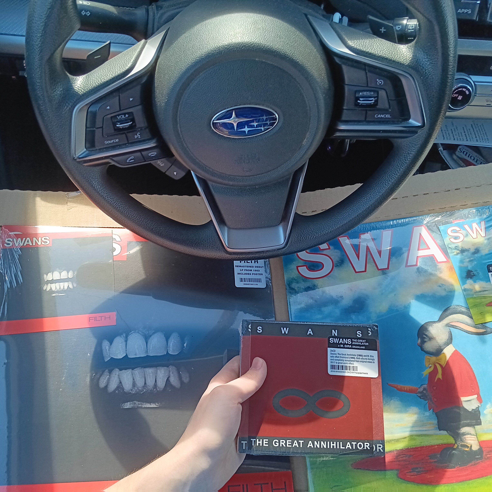My interest in industrial had grown since my encounter with Einstürzende Neubauten a month prior. I started listening to them along with Coil (which I had heard before, but only through completing the /mu/core chart; this time I was really checking them out) and, eventually, Death in June. I've rarely been so hooked on a band. I absolutely plowed through their entire discography, also checking out Sol Invictus, Current 93, Foetus, Swans, Throbbing Gristle, ROME, and others. I also took interest in Aphex Twin, Squarepusher, Nick Cave & the Bad Seeds, and Comus. I also spent a lot of time revisiting Agalloch and giving more attention to "Pale Folklore" and "Ashes Against the Grain." Since they took so much inspiration from neofolk, they were the one metal band that still feat neatly into my current listening habits. Even though I've gotten back into metal, Death in June and Swans remain my top 2 favorite bands.
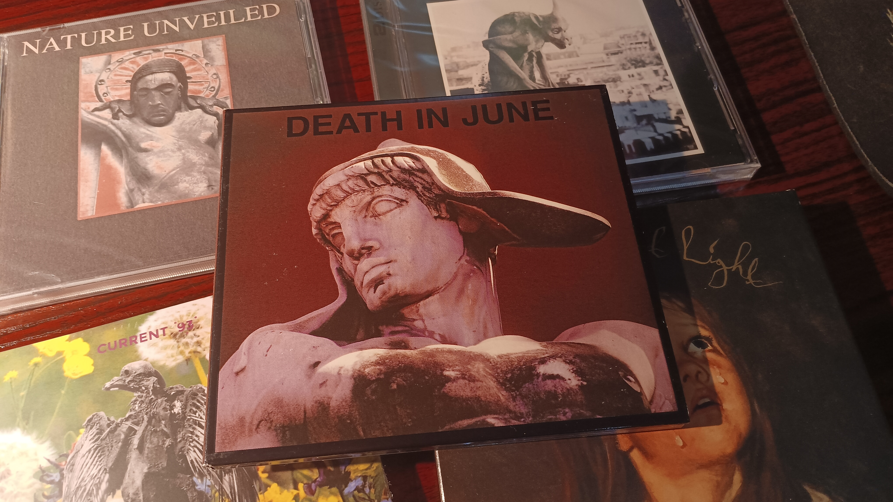 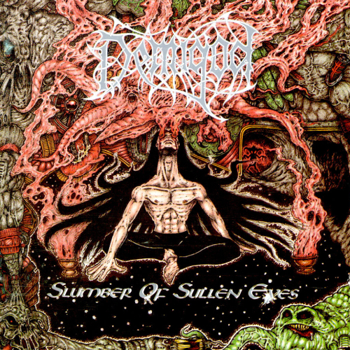
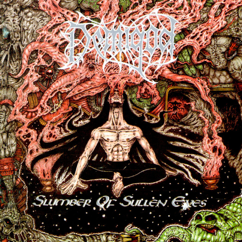
But things started steering back to metal in early October, when I went to see Gojira live (Oct 8th, 2024). I had bought tickets many months before, when I was still interested in metal, and I decided I wanted to go anyway, even though I wasn't particularly feeling it. It was a decent show. Gojira was playing with Korn and Spiritbox, so the crowd was more "normal" than I was used to. Also it was a stadium instead of the small, mostly floor venues I had grown to love, and it was kind of cool seeing Korn and knowing my younger teen self would've loved it, but I didn't get a lot of enjoyment out of Korn or Spiritbox's performances. Gojira was decent, and I found a couple new songs I liked, but they only played "Flying Whales" from "From Mars to Sirius." I wanted to hear "From The Sky" very much. This alone didn't get me back into metal, but it was closer to the forefront of my mind now. A few days later, I put on that Demigod CD again. It blew my fucking mind. Death metal was back. Demilich, Autopsy, Aggression, Suffocation, Bolt Thrower, Cannibal Corpse, Obituary, Hellhammer, At the Gates, Blood Incantation, Gorguts, Morbid Angel, and others were at the forefront of my rotation. It was now that I leaned into death metal full throttle. "Altars of Madness" finally clicked with me, and it clicked hard. I was anticipating the Devastation on the Nation Tour with I Am Morbid (Nov 30th, 2024), so I quickly went through the rest of the David Vincent albums (not including Illud) and loved all of them. Over the next few months, I discovered several more bands. I discovered Mystifier via my rewatching of "Gummo," and I planned to see Incantation with Decapitated on the Nihility Across North America Tour (Feb 25th, 2025) with Lucas, so I checked out Decapitated as well. I also revisited Mercyful Fate (and got *really* into "Don't Break the Oath") and started checking out other Finnish bands like Abhorrence, Rippikoulu, and Purtenance.
Once I quit my job in November (I didn't mention it before, but I worked at McDonald's from April to November), one of the first things I did was use my hard-earned money to buy my first car, a silver 2004 Toyota Corolla LE. It was in great shape overall, but the interior was a bit dirty (about as dirty as you'd expect from an average person's daily driver) and it had a smell I didn't like. So I took it upon myself to detail the interior on my own. It was a cool idea. But it was the middle of December. That meant a lot of days spent in the garage with a shitty space heater for heat and a clunky electric lantern to get better lighting inside the car. The whole process took several weeks. I could only get myself to work on it a couple hours per day, and I was waking up late (12 pm or later) and it was getting dark early, and I didn't want to be out when it was dark out. While working on my car, it was only natural that I'd want some music to listen to when I'm out in the garage by myself. It was here that I actually listened to the Decapitated debut for the first time, along with plenty of Morbid Angel and Mercyful Fate. I also listened to "Sackcloth 'N' Ashes" by 16 Horsepower a lot in there. I don't remember exactly how I stumbled on Devourment's "Molesting the Decapitated." I figure it was probably a matter of seeing it around on the internet enough for me to decide I should be familiar with it. This is the same line of thinking that compelled me to buy Candlemass' debut and Pestilence's "Consuming Impulse," or to try Blood Incantation's "Hidden History of the Human Race." So "Molesting the Decapitated" became a mainstay in the soundtrack for my car-detailing time.
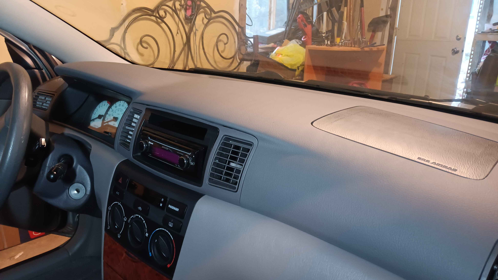
On January 6th, I made the long solo drive to my new school, WWU. My first month was uneventful, at least in terms of my music taste development. But I decided to see Nile with Six Feet Under on the Revenge of the Underworld Tour (Feb 11th, 2025), and so I checked out "Annihilation of the Wicked" and quite liked it. Similarly, I tried Bewitcher in anticipation of the Bewitcher / Deathcant show (Apr 3rd, 2025). At WWU, I befriended a guy named Jordan who put me onto Tomb Mold (stuff after their debut anyway) and Chainsword, plus many more bands I hope! By mid-February, I had been listening to Candlemass quite a lot, and I finally got around to seriously getting into Nightfall. Coming off the heels of that amazing album, I was itching for more, so I had a brief excursion with doom metal. I finally got around to trying Trouble's "Psalm 9" (a second time; the first time I wasn't into it) and Pentagram's debut, both of which I loved. Interestingly, this just so happened to be around that clip of Bobby Liebling from "The Ghoul" went viral, although I was totally unaware of it until after I had gotten into the band on my own. I also tried Reverend Bizarre, but didn't get into them. I may try them again, though. For a while I've felt that I skipped some important bands on my trip down the metal rabbit hole, and so every once in a while I make an effort to check those bands out. In this case, it was Judas Priest. In the middle of my little doom metal phase, I put on "Painkiller" and absolutely loved it.
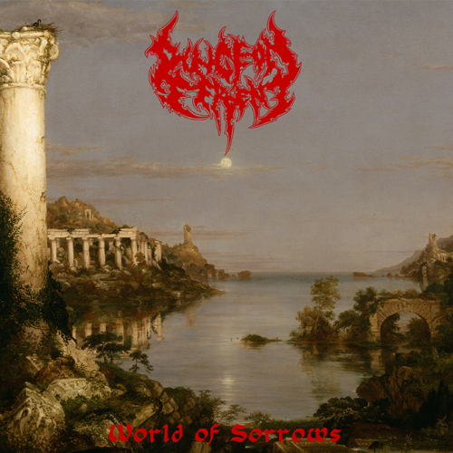I also gave Timeghoul another shot (I didn't like them when I tried them earlier; are you noticing a trend?) and got really into "Boiling in the Hourglass," but overall I still don't know if I care for their discography aside from that track and "Coda Infinity." I plan to keep trying, though. I've also gotten really into Arghoslent's second album (yeah, yeah, I know) and have started to search for melodic death metal bands in the same vein. Dungeon Serpent's "World of Sorrows" was a major winner, and I'm not immediately into Intestine Baalism, Grenadier, or House of Atreus, but I plan to give them some more chances soon. I've also re-visited Carcass' "Reek of Putrefaction" recently, just for fun I guess. I want to spend some more time with "Symphonies of Sickness" and their other material that came before "Heartwork" when I get the chance. And next up, I should be getting to see Obituary with Nails on the Cause of Death 35 Years Tour (Apr 30th, 2025) and Obscura with Atheist and Origin (May 16th, 2025). I mostly want to see Atheist, but I hope to familiarize myself with Obscura and Origin before the show. So who knows? Maybe technical death metal is the next frontier for me; I've certainly gotten a lot of enjoyment out of the first two Decapitated albums, and I like Nile's "Annihilation of the Wicked." Although, I've become quite busy with my schoolwork and trying to build meaningful relationships with other people, so my mind is on other things right now. But metal has brought me here and made me into the man that I am today, and so metal is something I will ALWAYS make time for.